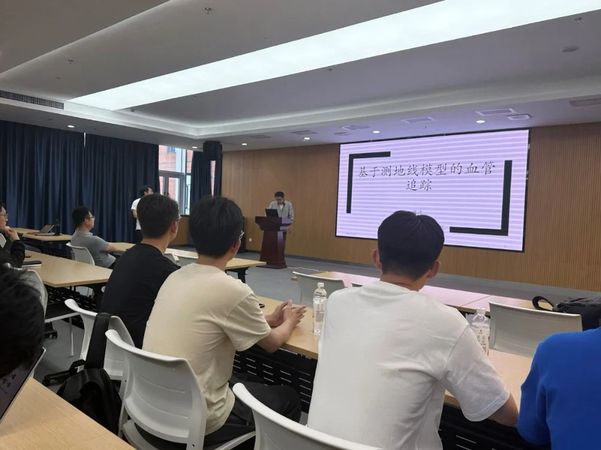
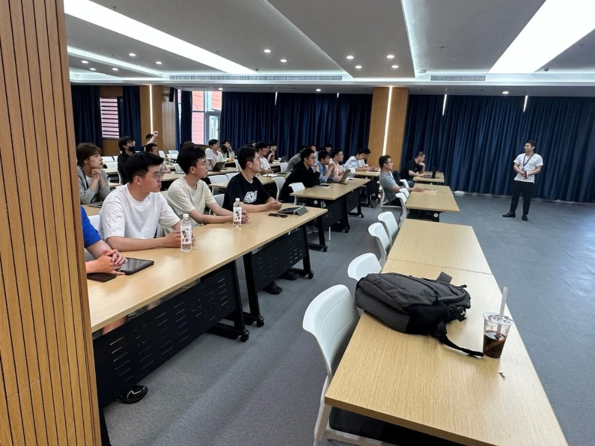
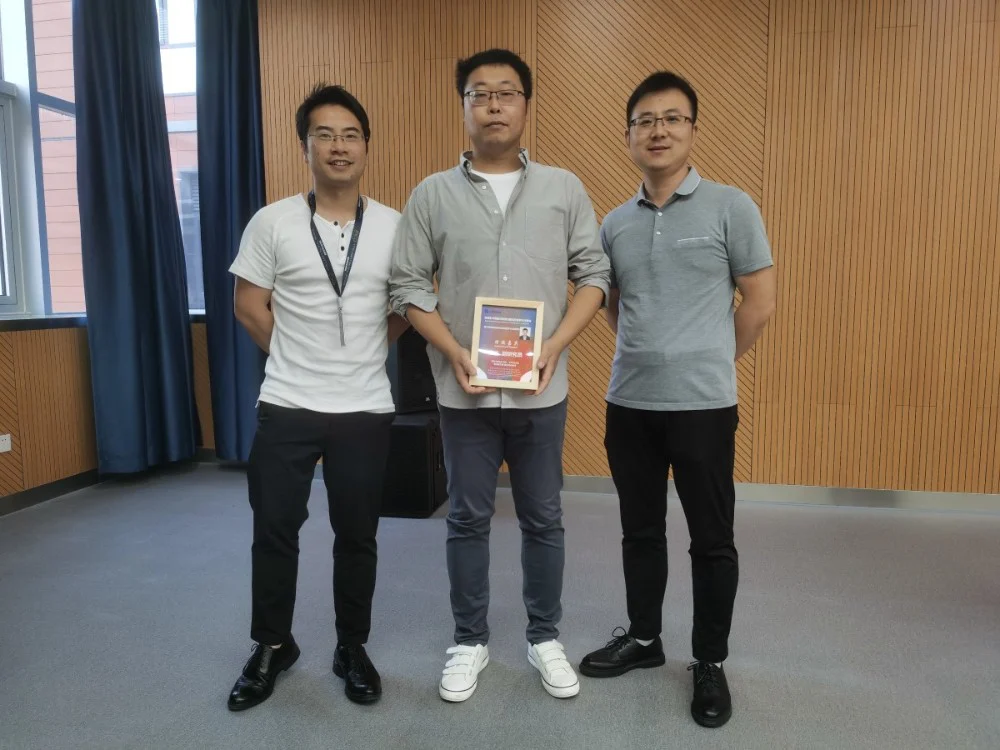

医学图像/眼科影像专题学术分享会
---- IMED第五十六讲
邀请嘉宾：
陈达副研究员 齐鲁工业大学
2023年5月15日，iMED团队邀请了陈达副研究员为同学们介绍了基于测地线模型的血管追踪与分割的相关研究。学术分享会由赵一天研究员主持，深入浅出地向各位同学介绍了多种测地线模型在血管追踪分割上的应用，为同学们带来了血管图像处理的新知新思。

陈达2017年获得法国巴黎文理研究大学的应用数学博士学位，后在巴黎多芬纳大学和巴黎国立眼科医院从事博士后研究工作，现就职于山东省人工智能研究院，带领图像智能分析团队。目前主要研究方向为基于偏微分方程的测地线模型与形变模型的理论与方法研究，同时聚焦于结合监督学习与几何变分模型的血管影像分析与图像分割等。他目前已获得了多项基金的支持，且作为第一作者或通信作者已在人工智能和应用数学专业的顶级期刊和主流会议上发表论文三十余篇，包括PAMI、IJCV、TIP、CVPR、ICCV等。
陈达老师围绕多种测地线模型分享了他一直以来的研究工作。研究内容首先围绕着如何结合图像特征与形状先验知识，设计了最小测地线的模型；随后针对医学影像中的神经、血管等线性、管状结构的中心线进行计算研究，以期达成在复杂场景下的高效准确的图像分割效果。在应用欧拉弹性测地线模型的时，将曲率正则项纳入了最小测地线模型和静态Hamilton-Jacobi方程，能够在背景较为复杂时准确地完成图像的分割和管状结构中心线的追踪。而针对主流测地线模型在实际应用中的不足，陈达老师团队根据血管、神经等具有良好方向性与特征的连续性等特点，设计了一系列更具针对性的测地线模型。此外围绕复杂场景下图像灰度值、颜色、纹理所提供特征信息不足的问题，还设计了新的最小测地线模型度量函数与最小曲线的搜索空间，将凸和星凸的形状限制条件也纳入了测地线的计算中，取得了新的突破。

同学们听完陈达老师的分享介绍之后，结合当前研究工作与所思所想与陈老师展开了充分的讨论交流。牟磊同学提出了应用测地线模型预处理以解决深度学习图像处理后血管断裂的想法；郝晋奎同学对图像节点与朝向判定进行了提问；卢成刚同学思考了在器官分割过程中应用测地线模型进行边界检测的可能性；赵一天老师还提出了关于血管交叉与覆盖段在图像上区分方法的疑问，陈达老师则就自身经验与既往研究应用内容一一进行了解答与讨论。
在本次分享会上同学们了解了多种测地线模型在血管、神经等线性结构上的追踪与分割应用，启迪了深度学习方法处理图像的新思路。IMED也将继续博采众长，不断探索前沿方向与知识，寻找智能化医学影像处理方法，实践数字化诊疗。
